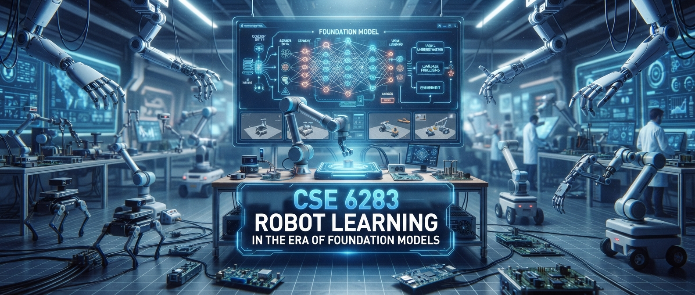

Advanced topics in robot learning, imitation learning, reinforcement learning, and Vision-Language-Action models
This advanced course explores modern machine-learning algorithms for autonomous robots as embodied intelligent agents, examining how embodied AI differs from internet AI in perceiving raw sensory data, making decisions, and adapting to the physical world. It bridges classical techniques with recent advances in large-scale models, starting from the fundamentals of robotic manipulation, imitation learning, reinforcement learning, and policy optimization, and progressing to Vision-Language-Action (VLA) models and foundation models for robotics. Through debating cutting-edge papers and completing a hands-on project, students will learn to formulate problems, design algorithms, validate ideas experimentally, and engage with the research process.
Tentative — dates to be announced, subject to change.
| Week | Topic |
|---|---|
| 1 | Course overview & introduction to embodied AI |
| 2 | Robotic manipulation foundations I — rigid-body kinematics & contact mechanics |
| 3 | Robotic manipulation foundations II — grasping & motion planning |
| 4 | Imitation learning I — behavior cloning & DAgger |
| 5 | Imitation learning II — Action Chunking Transformers (ACT) & Diffusion Policy |
| 6 | Reinforcement learning I — MDPs & value-based methods |
| 7 | Reinforcement learning II — policy-gradient methods, PPO & SAC |
| 8 | Reinforcement learning III — offline RL & sim-to-real transfer |
| 9 | Vision-Language-Action models I — RT-1, RT-2, OpenVLA |
| 10 | Vision-Language-Action models II — MolmoAct, π-0.5, cross-embodiment learning |
| 11 | Long-horizon reasoning — SayCan, Manipulate-Anything, Code-as-Policies |
| 12 | Foundation models for robotics — world models & generative simulators |
| 13 | Capstone project presentations |
Students complete a quarter-long capstone project in teams of two to three, applying course concepts to an open problem in robot learning — e.g. imitation or reinforcement learning for manipulation, adapting a Vision-Language-Action model to a new task or embodiment, or evaluating a foundation model's capability as a robot policy or world model. Projects may be validated in simulation or on physical hardware where available.
| Milestone | Deliverable |
|---|---|
| Proposal | 1-page problem statement, related work, and planned approach |
| Check-in | Progress update & preliminary results |
| Final | Presentation and written report |
Each week's readings are paired with a short written commentary due before class, covering: a summary of the paper's core claim and method, a critique of its assumptions or limitations, and how it connects to the broader arc of the course. Commentaries feed directly into in-class paper discussions and debates.
Commentaries should also engage with the ethical and societal implications of the work under discussion — safety, accountability, bias in training data, privacy, labor displacement, and the responsible collection and use of large-scale robot datasets are all fair game as embodied AI systems move from controlled lab settings into homes, workplaces, and public spaces.
One hands-on coding assignment accompanies the course, implementing and evaluating a policy-learning baseline (e.g. behavior cloning or a diffusion policy) on a manipulation benchmark. Submissions are graded on correctness, code quality, and a brief write-up of results. Due date TBD.
| Component | Weight |
|---|---|
| Class Participation | 30% |
| Project / Group Project | 60% |
| Coding Assignment | 10% |